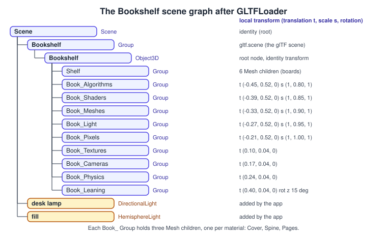
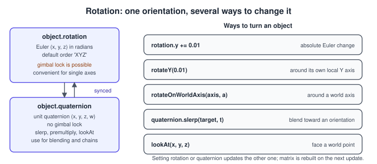
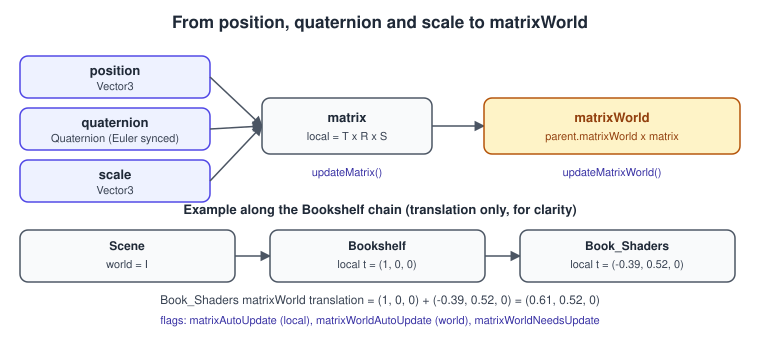
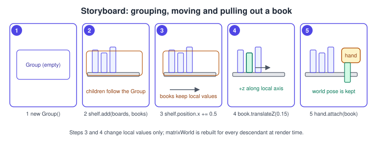
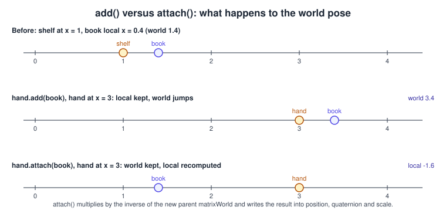

three.js Scene Graph and Transforms
|
This content was generated with the assistance of AI and should be verified against the official documentation before being relied on in production. |
Every object that three.js draws, lights or looks through lives in a tree. The root is a Scene; everything else is an Object3D (or a
subclass such as Group, Mesh, Light or Camera) attached to a parent. Each node stores only a local transform, relative to its
parent, and the library multiplies the chain of local transforms to obtain the world transform that the GPU needs. That single idea
explains why moving a shelf moves its books, why a camera can ride on a cart, why loaded models arrive as nested groups and why a
wrongly reparented object suddenly jumps across the room. This page explains the tree, the transform properties, the two matrices, the
operations that change the structure, and the performance switches.
The facts were checked in November 2026 against three.js r187 (npm three@0.187.0, released 30 October 2026). The code is plain
JavaScript with ES modules; it runs in any browser that supports WebGL 2 (Chrome 56, Firefox 51, Safari 15, Edge 79 and later) from a
local web server, and the same scene-graph API is used unchanged by WebGLRenderer and by WebGPURenderer, so nothing on this page
depends on the renderer. In the Bookshelf running example this is the step that turns the loaded
bookshelf.glb into something you can move: the GLB arrives as a small tree (shelf plus nine book nodes), and
the next pages pull a book out of the shelf and catch falling ones. Setting up the project is covered in
three.js Getting Started; loading the file itself in
Loading Models: glTF. The general concept (transform hierarchies, bounds, state
inheritance) is in Scene Graphs and Asset Formats, the maths behind the matrices
in Coordinate Spaces and Transforms and the raw WebGL equivalent in
Transforms and Cameras.
The scene as a tree

The figure shows what you get after GLTFLoader parses bookshelf.glb and the application adds two lights. The glTF file describes one
scene whose root node, Bookshelf, has ten children: the shelf and nine book nodes. The loader returns a Group for the glTF scene and
creates one Object3D per node; the nine book nodes all point at the same glTF mesh, so each becomes a node whose content is a set of
Mesh children sharing one BufferGeometry per primitive (cover, spine and pages materials). The numbers on the right are the real local
values stored in the file: five books standing on the upper board with scale y between 0.80 and 1.00 (so they have different
heights) and four on the lower board, the last of them leaning at 15 degrees around z.
The class hierarchy that makes this possible is small. Object3D is the base of everything that can be placed in the scene.
| Class | Role in the tree |
|---|---|
|
The base class: a transform, a parent, children, a name, a |
|
The root. Besides being a node it holds scene-wide state: |
|
An |
|
Leaves that carry a geometry and a material and are drawn. See three.js Geometry. |
|
Lights are nodes too: a |
|
Cameras are nodes: you can parent one to a group to build a rig, a turntable or a first-person head. |
|
A node in a skeleton; see three.js Animation System. |
One rule governs the tree: an object has at most one parent, and calling add on an object that already has a parent first removes it from
the old one.
Local transform: position, rotation, quaternion and scale
Every Object3D has four editable properties, all expressed in the coordinate system of its parent (the local space):
| Property | Type | Meaning |
|---|---|---|
|
|
Offset of the node origin from the parent origin, in the parent units. |
|
|
Angles in radians about x, y and z, applied in the order given by |
|
|
The same orientation as a unit quaternion. |
|
|
Per-axis scale, default |
three.js uses a right-handed coordinate system with +y up (Object3D.DEFAULT_UP is (0, 1, 0)); a default camera looks down its own
negative z axis; angles are in radians and positive rotation is counter-clockwise when looking from the positive end of the axis toward the
origin. glTF files use the same convention, which is why bookshelf.glb needs no conversion. The unit is whatever you choose; the Bookshelf
file is authored in metres, so a book is about 0.8 units tall times its y scale.
Rotation: Euler angles versus quaternions

Euler angles are easy to read and to animate on a single axis, but three rotations applied in sequence can line up two axes and lose a degree
of freedom (gimbal lock), and interpolating Euler angles does not take the shortest path. Quaternions avoid both problems: they compose by
multiplication and interpolate with slerp. The practical rule is to use rotation for simple, one-axis changes (a spinning book
cover) and the quaternion API for blending, rigs and anything involving lookAt. The maths is in
Rotations and Quaternions.
The methods that change orientation incrementally differ in the axis they use:
| Call | Effect |
|---|---|
|
Adds to the Euler angle. Which physical axis that turns depends on |
|
Rotates around the object’s own (local) axis, whatever its current orientation. |
|
Same, around an arbitrary local unit vector. |
|
Rotates around a fixed world axis, ignoring the object’s orientation. |
|
Moves a fraction |
|
Orients the object toward a world-space point using its |
Changing rotation.order after setting angles does not convert them: set the order first, then the angles. The Euler default is correct for
almost all game code; an aircraft or a first-person camera usually wants 'YXZ' (yaw, then pitch, then roll) so that yaw stays around the
world vertical.
From local transform to matrixWorld

Each object stores two 4x4 matrices:
-
matrixis the local transform, composed fromposition,quaternionandscaleas translation times rotation times scale. -
matrixWorldis the transform from the object’s space to world space: the parent’smatrixWorldtimes the object’smatrix.
\[ M_{ world }(child) = M_{ world }(parent) \, M_{ local }(child), \qquad M_{ local } = T \, R \, S \]
The renderer works on matrixWorld; the model-view matrix handed to the vertex shader is the camera’s inverse world matrix times the
object’s matrixWorld (the shader built-ins modelViewMatrix, modelMatrix, viewMatrix, projectionMatrix and normalMatrix come
from these). When you call renderer.render( scene, camera ), three.js first calls scene.updateMatrixWorld(), which walks the tree from
the root and, for every node, recomputes matrix (when matrixAutoUpdate is true) and matrixWorld (when matrixWorldAutoUpdate is
true and something changed). A camera that has no parent is updated separately.
| Flag or method | Default | Meaning |
|---|---|---|
|
|
The local |
|
|
The world matrix is recomputed during |
|
|
When |
|
n/a |
Recomputes the local matrix now. |
|
|
Updates this node and its descendants. Call it yourself when you need correct world values before the next render. |
|
all |
A more granular variant that can also update ancestors. |
The most common source of "the value is stale" bugs is reading world-space data right after changing a transform and before any render. The
local matrices are only recomputed during the update, so if you set shelf.position.x = 2 and immediately read a child’s world position
you get the old answer, unless you call shelf.updateMatrixWorld( true ) first.
World-space queries
position, quaternion and scale are always local. To get world values use the helpers, passing a target object so that nothing is
allocated:
import * as THREE from 'three';
// Temporary objects reused every frame to avoid garbage-collector pauses.
const _p = new THREE.Vector3();
const _q = new THREE.Quaternion();
const _s = new THREE.Vector3();
const _box = new THREE.Box3();
export function describeBook( book ) {
book.updateWorldMatrix( true, false ); // make parents current, skip children
book.getWorldPosition( _p ); // world position
book.getWorldQuaternion( _q ); // world orientation
book.getWorldScale( _s ); // world scale
_box.setFromObject( book ); // world-space bounding box of the subtree
return {
world: _p.toArray(),
size: _box.getSize( new THREE.Vector3() ).toArray(),
// Convert a point from the book's local space to world space (and back).
tipWorld: book.localToWorld( new THREE.Vector3( 0, 0.4, 0 ) ).toArray(),
tipLocal: book.worldToLocal( new THREE.Vector3( 0.5, 1.0, 0 ) ).toArray()
};
}Source: three.js docs: Object3D
localToWorld and worldToLocal modify and return the vector you pass in, so give them a fresh or temporary one. Box3.setFromObject
walks the whole subtree and returns world-space bounds, which makes it the easiest way to size a camera framing or a collision box.
Building a scene graph by hand
The first runnable example builds a miniature of the Bookshelf scene without loading anything: a Group for the shelf, a Group per book,
an AxesHelper to see each node’s local axes, and a rotating group that carries all of it. It uses an import map, so the page needs no
bundler; serve the folder with any static server (npx serve or python3 -m http.server) because ES modules do not load from file://.
<!doctype html>
<html lang="en">
<head>
<meta charset="utf-8">
<title>Bookshelf scene graph</title>
<style>html,body{margin:0;height:100%;background:#111}canvas{display:block}</style>
<script type="importmap">
{
"imports": {
"three": "https://cdn.jsdelivr.net/npm/three@0.187.0/build/three.module.js",
"three/addons/": "https://cdn.jsdelivr.net/npm/three@0.187.0/examples/jsm/"
}
}
</script>
</head>
<body>
<script type="module">
import * as THREE from 'three';
import { OrbitControls } from 'three/addons/controls/OrbitControls.js';
const renderer = new THREE.WebGLRenderer( { antialias: true } );
renderer.setPixelRatio( Math.min( window.devicePixelRatio, 2 ) );
renderer.setSize( window.innerWidth, window.innerHeight );
document.body.appendChild( renderer.domElement );
const scene = new THREE.Scene();
scene.background = new THREE.Color( 0x1b1d23 );
const camera = new THREE.PerspectiveCamera( 45, window.innerWidth / window.innerHeight, 0.1, 50 );
camera.position.set( 1.5, 1.2, 2.2 );
new OrbitControls( camera, renderer.domElement );
scene.add( new THREE.HemisphereLight( 0xffffff, 0x444455, 1.0 ) );
const lamp = new THREE.DirectionalLight( 0xfff1d6, 2.5 );
lamp.position.set( 2, 3, 2 );
scene.add( lamp );
// Shelf group: two boards.
const shelf = new THREE.Group();
shelf.name = 'Shelf';
const wood = new THREE.MeshStandardMaterial( { color: 0x9a6b3c, roughness: 0.8 } );
for ( const y of [ 0, 0.5 ] ) {
const board = new THREE.Mesh( new THREE.BoxGeometry( 1.2, 0.04, 0.4 ), wood );
board.position.y = y;
shelf.add( board );
}
// Book nodes: each is a Group so we can add a pivot, a helper or a label later.
const bookGeometry = new THREE.BoxGeometry( 0.05, 0.4, 0.3 );
const colors = [ 0xb91c1c, 0x1d4ed8, 0x047857, 0xb45309, 0x6d28d9 ];
const books = new THREE.Group();
books.name = 'Books';
colors.forEach( ( color, i ) => {
const book = new THREE.Group();
book.name = 'Book_' + i;
book.position.set( -0.3 + i * 0.07, 0.04 + 0.2, 0 ); // resting on the lower board
book.add( new THREE.Mesh( bookGeometry, new THREE.MeshStandardMaterial( { color, roughness: 0.6 } ) ) );
book.add( new THREE.AxesHelper( 0.15 ) ); // shows this node's local axes
books.add( book );
} );
const bookshelf = new THREE.Group();
bookshelf.name = 'Bookshelf';
bookshelf.add( shelf, books ); // add() accepts several children
bookshelf.position.y = -0.2;
scene.add( bookshelf );
renderer.setAnimationLoop( ( timeMs ) => {
bookshelf.rotation.y = timeMs * 0.0003; // every child follows
renderer.render( scene, camera );
} );
window.addEventListener( 'resize', () => {
camera.aspect = window.innerWidth / window.innerHeight;
camera.updateProjectionMatrix();
renderer.setSize( window.innerWidth, window.innerHeight );
} );
</script>
</body>
</html>Source: three.js manual: Scene Graph
The animation loop receives a time in milliseconds, so no Clock is needed. (Clock is deprecated since r183 in favour of Timer.) Setting bookshelf.rotation.y changes one local value, and the library
re-derives the world matrix of every board, book and axes helper on the next render.
Adding, removing and reparenting

The operations that change the structure are:
| Call | Behaviour |
|---|---|
|
Appends children. Each keeps its local values, so its world position changes if the new parent is elsewhere. An object with a parent is removed from it first. Dispatches |
|
Detaches. The object keeps its local values; it is no longer rendered unless re-added. Dispatches |
|
Reparents while preserving the world transform: three.js multiplies by the inverse of the new parent’s world matrix and writes the result into position, quaternion and scale. |
|
Removes all children. |
|
Copies the object and, by default, its subtree. Geometries and materials are shared, not copied. Skinned meshes need |

The figure uses one dimension. The book is a child of the shelf (at x = 1) with local x = 0.4, so its world x is 1.4. With hand.add(book)
and a hand at x = 3, the local 0.4 is reinterpreted under the new parent and the book jumps to 3.4. With hand.attach(book) the book stays at
1.4 and its local x becomes -1.6. Use attach for pick-up and drop mechanics, and add when you really want the new parent’s frame (for
example putting a freshly created object at a known local offset).
attach has a documented limitation: it does not support non-uniformly scaled nodes in the scene graph, because a rotation below a
non-uniform scale produces shear that position, quaternion and scale cannot represent. The books of bookshelf.glb have a non-uniform
scale on themselves (y of 0.80 to 0.95) but are not rotated relative to a non-uniformly scaled ancestor, so they can be picked up and put back.
If you rotate a node that has a non-uniformly scaled parent you will see shearing, and lookAt documents the same restriction.
Pull a book out of the shelf
The next example loads the shared model, finds a book by name, prints the tree, pulls the book forward and moves it between parents. It assumes the setup of the previous example (scene, camera, renderer and lights) and the file served next to the page. The loader options (Draco, KTX2) are explained in Loading Models: glTF.
import * as THREE from 'three';
import { GLTFLoader } from 'three/addons/loaders/GLTFLoader.js';
const gltf = await new GLTFLoader().loadAsync( './bookshelf.glb' );
const bookshelf = gltf.scene; // a Group named "Bookshelf"
scene.add( bookshelf );
// 1. Print the tree with indentation.
bookshelf.traverse( ( node ) => {
let depth = 0;
for ( let p = node.parent; p && p !== bookshelf.parent; p = p.parent ) depth++;
console.log( ' '.repeat( depth ) + node.type + ' ' + node.name );
} );
// 2. Find a node by name (first match, depth-first).
const book = bookshelf.getObjectByName( 'Book_Shaders' );
const home = book.parent; // remember where it lives
// 3. Pull the book out of the shelf along its own z axis.
book.translateZ( 0.15 );
// 4. Move it to a "hand" group that follows the pointer, keeping its world pose.
const hand = new THREE.Group();
scene.add( hand );
hand.attach( book );
// ... later, put it back exactly where the hand left it:
home.attach( book );
book.position.z = 0; // slide back into its slotSource: three.js docs: Object3D
Node names come from the glTF file; GLTFLoader cleans them so they can be used as animation track names (spaces become underscores and
characters that are reserved there are removed), which is why Book_Shaders is a safe lookup key. Names are not required to be unique:
getObjectByName returns the first match, getObjectsByProperty( 'name', value ) returns all of them. The glTF scene in this file is
named Bookshelf and so is its root node; the lookup of a book name is unambiguous, but looking up Bookshelf returns the outer group.
A pivot: opening the cover around the spine
A pivot is an extra node whose origin is where you want the rotation to happen. A book cover hinges at the spine, not at its centre, so the cover mesh is offset inside a pivot group and the pivot is rotated:
import * as THREE from 'three';
// The cover is 0.3 wide (z) and 0.4 high; its hinge is the edge at z = 0.
const coverGeometry = new THREE.BoxGeometry( 0.01, 0.4, 0.3 );
coverGeometry.translate( 0, 0, 0.15 ); // move the geometry so that the hinge is at its origin
const pivot = new THREE.Group(); // origin = the spine edge
pivot.position.set( -0.025, 0, -0.15 ); // place the hinge on the book
const cover = new THREE.Mesh( coverGeometry, new THREE.MeshStandardMaterial( { color: 0xb91c1c } ) );
pivot.add( cover );
book.add( pivot ); // book from the previous example
// Open the cover by up to 110 degrees; the mesh swings around the hinge.
export function setCoverOpen( amount ) { // amount in [0, 1]
pivot.rotation.y = -THREE.MathUtils.degToRad( 110 ) * amount;
}Source: three.js docs: BufferGeometry
Baking the offset into the geometry with geometry.translate is a one-time operation on the vertex data (the geometry is shared by every mesh
that uses it, so translate a geometry only if all users want it); the pivot then carries the per-frame rotation as an ordinary node
property. The alternative, rotating a mesh whose geometry is centred and compensating with position, works but mixes two concerns.
Static objects, flags and performance
Updating the transforms costs time proportional to the number of nodes, every frame, whether anything moved or not. For a few hundred nodes this is negligible; for thousands it shows up in the CPU profile. The tools, in order of preference:
-
Fewer nodes. Merge static geometry (
BufferGeometryUtils.mergeGeometries) or useInstancedMeshorBatchedMeshinstead of oneMeshper object. See three.js Geometry. -
Freeze static nodes. Set
matrixAutoUpdate = falseon objects that never move afterupdateMatrix(). Their children are still updated relative to them, so freeze every node of a static subtree, not only its root. -
Update on demand. Set
scene.matrixWorldAutoUpdate = false, change transforms in response to input or animation events, and callscene.updateMatrixWorld()yourself in those frames. Combine it with on-demand rendering (render only when something changed). -
Reuse temporaries. Allocating a
Vector3orQuaternionper node per frame produces garbage; declare module-level scratch objects and pass them as the target argument.
import * as THREE from 'three';
// Freeze the shelf: it never moves, so skip its per-frame matrix rebuild.
const shelfGroup = bookshelf.getObjectByName( 'Shelf' );
shelfGroup.updateMatrix();
shelfGroup.matrixAutoUpdate = false;
// Fully manual updates for a mostly static scene.
scene.matrixWorldAutoUpdate = false;
function onBookMoved( book ) {
scene.updateMatrixWorld(); // rebuild local and world matrices once, then render
renderer.render( scene, camera );
}Source: three.js docs: Object3D
With matrixWorldAutoUpdate off, nothing refreshes world matrices behind your back: a loader that adds objects, an animation mixer, or a
camera moved by controls will appear frozen until you call updateMatrixWorld. Switch it on again (the default) when in doubt.
Layers, visibility and render order
Three properties on Object3D control whether a node takes part in a pass, independent of the tree shape:
-
visible = falsehides the node and, for rendering, its whole subtree;traverseVisibleskips hidden branches. -
layersis a 32-bit mask. A node is drawn by a camera only when they share at least one layer, and aRaycasterfilters hits by its own layers. Use layer 1 for helpers or for an outline pass, for examplecamera.layers.enable( 1 )andhelper.layers.set( 1 ). -
renderOrderoverrides the sorting order inside the opaque and transparent lists (lower first); setting it on aGroupapplies to the descendants as a unit. -
frustumCulled(defaulttrue) skips objects whose bounding sphere is outside the camera frustum; turn it off for objects that move in the vertex shader beyond their geometry bounds.
Traversing and searching
| Method | Notes |
|---|---|
|
Visits the node and all descendants, depth first, parent before children. |
|
Same, skipping invisible nodes and their descendants. |
|
Visits the parents up to the root. |
|
First match in the subtree; returns |
|
All matches, as an array. |
Do not add or remove children from inside a traverse callback: collect the targets in an array and change the tree afterwards. A typical use after loading a model is to enable shadows on every mesh:
bookshelf.traverse( ( node ) => {
if ( node.isMesh ) {
node.castShadow = true;
node.receiveShadow = true;
}
} );Source: three.js docs: Object3D
Use the isMesh, isGroup, isLight style flags rather than instanceof or type strings: they survive duplicated copies of the library
(a common result of bundling) and are fast.
Helpers
Helpers are ordinary nodes that draw debugging geometry. Add them while developing and remove them (and call dispose()) before shipping.
| Helper | What it shows |
|---|---|
|
The local x (red), y (green) and z (blue) axes of its parent. |
|
A reference ground grid. |
|
A world-space bounding box; call |
|
An arrow, handy for normals and directions. |
|
The light position and direction; the shadow camera frustum is shown by |
|
The bones of a skinned model. |
|
A |
import * as THREE from 'three';
scene.add( new THREE.GridHelper( 4, 16 ) );
const axes = new THREE.AxesHelper( 0.3 );
book.add( axes ); // follows the book
const bounds = new THREE.BoxHelper( book, 0xffff00 );
scene.add( bounds );
renderer.setAnimationLoop( () => {
bounds.update(); // refit to the moving book
renderer.render( scene, camera );
} );Source: three.js docs: AxesHelper
Common mistakes
-
Scaling instead of sizing. Non-uniform scale is cheap and handy for a prototype, but it distorts normals (the renderer corrects with the normal matrix, which costs a little), breaks
attachandlookAtunder rotated children, and surprises physics engines. Prefer sizing the geometry and keep node scales at 1 where you can. -
Negative scale. A scale of
-1mirrors an object and reverses triangle winding; three.js detects a negative world-matrix determinant and flips the front face, butBatchedMeshdoes not support negatively scaled matrices. -
Reading world values early. See the stale-matrix note above.
-
Parenting a camera and forgetting to add the parent. A camera inside a group renders correctly only if the group itself is in the scene that is rendered, otherwise its world matrix is never refreshed.
-
Moving a frozen node. After
matrixAutoUpdate = falsechanges topositionhave no effect until you callupdateMatrix(). -
Assuming
removefrees memory. It only detaches. Geometries, materials and textures are released by callingdispose()on them, which is covered in three.js Performance and Disposal. -
Copying vectors by reference.
object.position = other.positionis not allowed; writeobject.position.copy( other.position ). -
Using
lookAton a child whose parent rotates.lookAttakes a world point and accounts for the parent, but on rotated non-uniform parents the result is skewed.
Where the books are outdated
The scene-graph and transform chapters of the three.js books (PAR ch. 3, LTJ ch. 2 and 8, TCB ch. 2) describe the same tree and the same three transform properties, and that part is still correct. The details around them changed:
| Books show | Today | Notes |
|---|---|---|
|
|
|
|
|
Both representations are always present and synchronised; no flag is needed. |
|
|
Reparenting with a preserved world pose is a method of the node. |
|
|
Searching is by name through the whole subtree. |
Hand-written |
|
The loop receives a timestamp; |
Global |
ES modules and an import map, addons under |
|
JSON/binary three.js formats and the Blender three.js exporter |
glTF 2.0 and |
A glTF scene arrives as a tree like the one in the first figure. |
Where the books show lighting values or camera distances measured in the old, non-physical units, expect different brightness today; the
changes are covered in three.js Lights and Shadows. No book covers WebGPU: the same
scene graph is used by WebGPURenderer, see WebGPURenderer and TSL.
Next steps in the Bookshelf track: geometry and instancing for a shelf of books, PBR materials, and picking a book with a Raycaster and OrbitControls. The matrix chain that this page builds on is the same one the raw WebGL track computes by hand in Transforms and Cameras; the general version is in Coordinate Spaces and Transforms; terms are in the glossary.
References
-
three.js manual, Scene Graph: https://threejs.org/manual/#en/scenegraph
-
three.js manual, Fundamentals: https://threejs.org/manual/#en/fundamentals
-
three.js docs, Object3D: https://threejs.org/docs/pages/Object3D.html
-
three.js docs, Group: https://threejs.org/docs/pages/Group.html
-
three.js docs, Euler: https://threejs.org/docs/pages/Euler.html and Quaternion: https://threejs.org/docs/pages/Quaternion.html
-
three.js docs, AxesHelper: https://threejs.org/docs/pages/AxesHelper.html
-
three.js Migration Guide: https://github.com/mrdoob/three.js/wiki/Migration-Guide
-
three.js releases: https://github.com/mrdoob/three.js/releases
-
Tony Parisi, WebGL: Up and Running (O’Reilly, 2012): https://www.oreilly.com/library/view/webgl-up-and/9781449326487/
-
Jos Dirksen, Learning Three.js, 2nd edition (Packt, 2015): https://www.packtpub.com/en-us/product/learning-threejs-the-javascript-3d-library-for-webgl-second-edition-9781784392215
-
Jos Dirksen, Three.js Cookbook (Packt, 2015): https://www.packtpub.com/product/threejs-cookbook/9781783981182